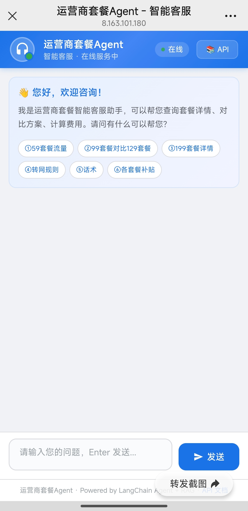

项目作品
从需求到落地的完整链路，代码借助 AI 辅助，架构判断来自实际踩坑
零成本AI Agent搭建指南 — 从零到微信可用
业务问题：企业想用AI Agent但部署门槛高，市面教程要么收费要么只讲一半。
我做了什么：写了一份完整SOP，覆盖获取云电脑→部署Agent→配置API→对接微信，全程零成本，面向零基础用户。
效果：普通用户30分钟跑完全流程，无需编程基础。
AI工作流：一个人干三个人的活
业务问题：一个人做AI项目，效率低、迭代慢，一个功能改三天。
我做了什么：用3个AI工具搭建工作流——我负责发现问题和做决策，AI负责执行。
- 发现业务痛点（退费流程太慢、差评处理效率低）
- 设计解决方案（选什么工具、怎么落地）
- 调度AI执行（任务编排、架构设计、快速迭代）
- 验证结果、培训员工使用
效果：RAG系统评测从74%提升到98.7%，开发效率提升10倍。
退费申请生成器 — 30秒搞定15分钟的活
业务问题：电信营业厅同事不愿写调账申请，一个月只写3-5个，嫌麻烦。
我做了什么：做一个网页工具，选场景→填两行→一键下载Word，零学习成本。
效果：申请时间从15分钟压到30秒，月均申请量从3-5个提升到10-15个。

差评话术生成器 — 10秒生成一条回复
业务问题：电商运营每天花1-2小时写差评回复，质量参差不齐，影响转化率。
我做了什么：输入差评内容，自动识别类型，生成安抚+解释+补偿完整话术。
效果：单条回复从10分钟压到10秒，支持6种补偿策略，可直接复制到平台使用。

电信套餐智能问答系统 — 2分钟查询压到4秒
业务问题：电信客服查询套餐靠翻文档，一条查询要2分钟，新人培训周期长。
我做了什么：搭建智能问答系统，覆盖190+业务文档，支持自然语言查询。
效果：查询时间从2分钟压到4秒，准确率98.7%，可覆盖80%的基础咨询。

AI方案评测体系 — 找到最适合的方案
业务问题：不知道哪个AI方案最适合业务场景，选型靠感觉。
我做了什么：设计30道测试题，覆盖6种题型，横向对比3种方案。
效果：找到最适合的方案，质量最高97.3%，响应最快2.86秒。
纯Python RAG系统 — 比框架快65%
业务问题：LangChain框架太重，响应慢，依赖多，部署复杂。
我做了什么：从零实现完整RAG链路，不依赖任何框架，代码仅954行。
效果：比LangChain快65.7%，通过率提升10%，部署更简单。
运营商套餐数据自动采集 — 100%自动化
业务问题：运营商套餐数据需要手动更新，耗时耗力，容易出错。
我做了什么：用Playwright实现自动化抓取，直接导入RAG知识库。
效果：采集10+套餐，100%自动化率，知识库自动更新。
RAG系统Web端集成 — 公网远程访问
业务问题：RAG系统只能本地使用，无法远程访问，多人无法同时使用。
我做了什么：将RAG系统集成到Web界面，通过公网IP实现远程访问。
效果：用户可通过浏览器直接与知识库对话，无需本地部署。